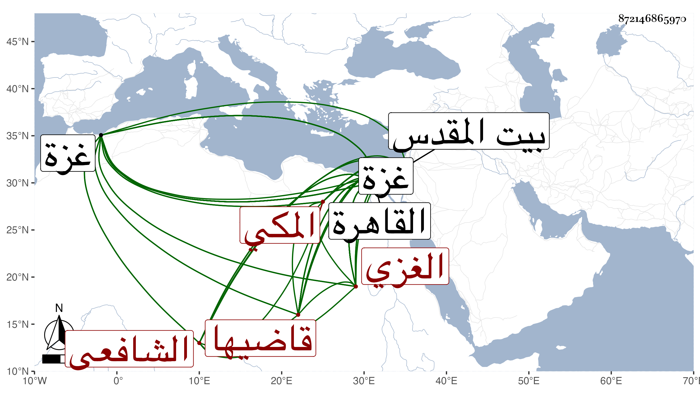

0902Sakhawi.DawLamic.ITO20230111-ara1.EIS1600.872146865970
Biography ID: 872146865970
117
محمد بن محمد بن أحمد بن محمد بن موسى الشمس أبو الوفاء بن الخواجا الشمس المكي الأصل الغزي الشافعي قاضيها ويعرف بابن النحاس . ولد في يوم الجمعة سلخ جمادي الثانية سنة أربع وخمسين وثمانمائة بغزة ونشأ بها فحفظ القرآن عند الزين عبد الرحمن بن ذي النون وصلى به في جامعها القديم وكساه أبوه بسطا تساوي مائة دينار ، وقرأ في المنهاج وغيره من المتون كالفية النحو ، وعرض ربع العبادات منه على خطيب مكة أبي الفضل النويري حين وروده عليهم في سنة تسع وستين ، ولازم الشمس بن الحمصي في الفقه والعربية وغيرها وارتحل لبيت المقدس غير مرة وقرأ في بعضها يسيرا علي الكمال بن أبي شريف وكذا قرأ على أخيه البرهان ، ودخل القاهرة في حياة والده للتجارة وقرأ فيها علي البرهان العجلوني ومحمد الطنتدائي الضرير ، وعاد إلى بلده فداوم عالمها الحمصي سيما بعد تزوجه بأمه بعد وفاة أبيه حتى أذن له في التدريس وحسن له الدخول في قضاء بلده ببذل على يد إبراهيم النابلسي حتى وليه في مستهل صفر سنة تسع وسبعين عوضا عن المحيوي عبد القادر بن جبريل ووصل إليه التشريف في منتصفه فباشره أحسن من الذي قبله فيما قيل إلى أن طلب في سابع ذي الحجة إلى القاهرة لشكوى بعضهم فيه فحضر وتمثل بين يدي السلطان هو وولده أبو الطيب العشاري وبان بطلان ما أنهى عنه ومع ذلك صرف بعد نحو أربعة أشهر كان مقيما فيها بالقاهرة ونائبه هناك يباشر عنه بل استمر مقيما بعد صرفه وهو يتردد إلى العبادي والبكري وأبي السعادات البلقيني وزكريا والجوجري وابن قاسم لقراءة الفقه وأصوله والعربية وكذا قرأ على التقريب للنووي بحثا مع الأربعين له وأشياء بقراءته وقراءة غيره وأذنت له وكذا كل من ذكر ، وتكرر رجوعه غير مرة ثم قدومه القاهرة وتوجه في بعض المرات في ركاب السلطان إلى غزة فبرز كثير من أهلها للشكوى من خصمه والسؤال في عود هذا فبادر لتوليته وذلك قبيل الغروب من يوم الأربعاء تاسع جمادى سنة اثنتين وثمانين فدام إلى صفر سنة سبع وثمانين فاستقر الشرف العيزري ولم يلبث أن أعيد في محرم التي تليها ثم انفصل به في شعبان سنة تسع واستدعى به البدري أبو البقاء بن الجيعان لإنتمائه إليه فسافر معه لمكة أول شوال مبتدئا بالزيارة النبوية التي مكث فيها أياما ثم حج وكانت حجة الإسلام وعاد معه إلى القاهرة ، وانكشف حاله بعد الثروة الزائدة من نقد وعقار ونحو ذلك واستغنى بما يتجدد له في كل يوم من ربح بسبب المعاملات وغيرها وتحمل ديونا جمة بسبب ما كان في تلك الحالة أوجه منه بعدها وكان قد خطب بجامع بلده القديم وجامعه الجاولي وعقد الميعاد بأولهما من سنة خمس وثمانين في الأشهر الثلاثة قراءة وتفسيرا فأجاد وازدحم الناس بمجلسه حتى كان العيزري وابن جبريل يشهدانه وأعانه على ذلك قوة ذكائه وسرعة فطنته وقوة حافظته وتولعه بالنظم ، كل ذلك مع قبول شكله وظرفه ولطيف عشرته وإقبال الخواطر الصافية بالميل إليه وهو الآن في سنة تسع وتسعين والتي قبلها في غاية ما يكون من الذل والإهانة بالحبس ونحوه أحسن الله خلاصه ولطف به .
